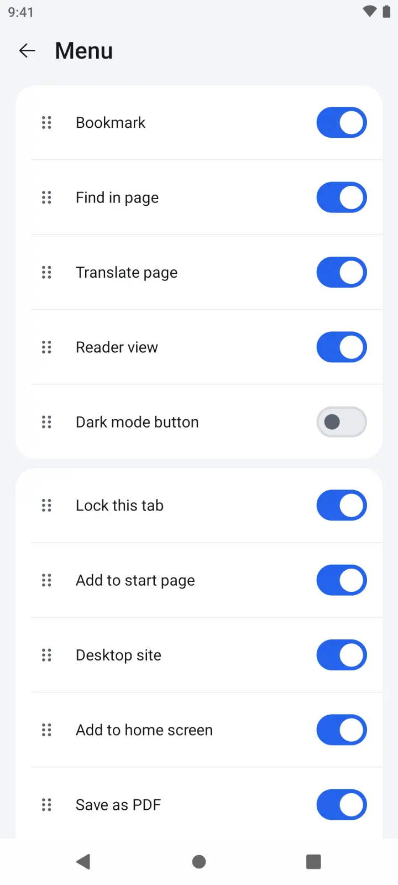
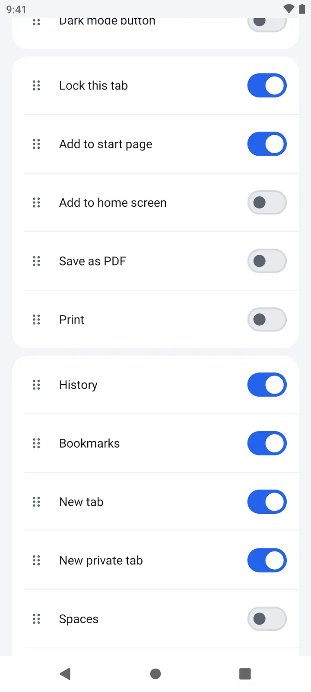
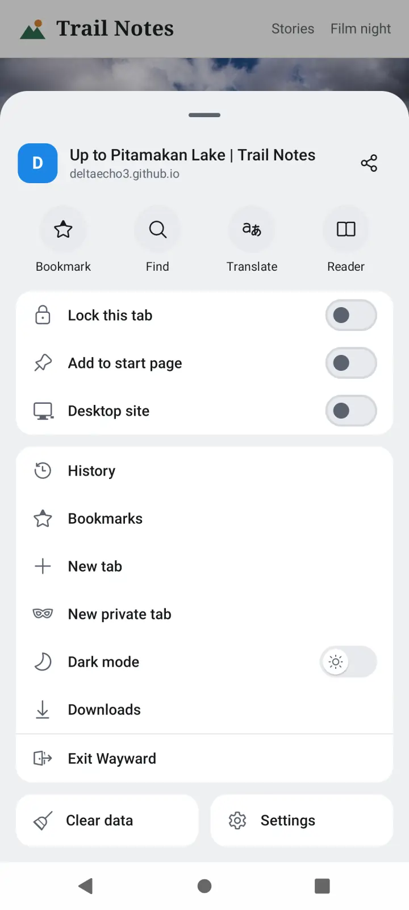

Reorder or hide menu items
How-to
Hide menu items you never use. Move your favorites to the top of their group.
- Open the ⋮ menu and tap Settings > Customize.
- Scroll down to Menu. It lists every item, in the menu's four groups.

The groups are the same as in the menu:
- The round buttons at the top: Bookmark, Find in page, Translate page, Reader view, Desktop site and Dark mode button.
- This page: Lock this tab, Add to start page, Add to home screen, Save as PDF and Print.
- The rest of Wayward: New tab, New private tab, Spaces, History, Bookmarks and Dark mode.
- The bottom pair: Clear browsing data and Settings.
Move an item
Hold the six dots at the start of its row and drag it up or down. The rows it passes make room, and it stays where you let go. Items move within their own group, so the page's items stay with the page. The bottom pair keep their places, so they have no dots.
With TalkBack, each row has actions to move it one place instead, such as Move Bookmark down.
Hide or show an item
Turn its switch off to hide it from the menu, and back on to show it again. Settings can't be hidden (it's Always there), so you can always get back here.
Dark mode button starts hidden. Turn it on for a round Dark button in the menu's top row: see Turn on dark mode.

What you'll see
The menu follows your list straight away. Here, History and Bookmarks were moved up and a few page items hidden:

With the Minimalist Address Bar, the menu is laid out a little differently, but it still follows these choices. To undo everything at once, use Reset to default at the end of Customize; it puts the bars and gestures back too.